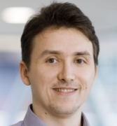

About us
the MIDAS.lab
Lab
The lab is situated in the Department of Interventional and Diagnostic Radiology in the University Hospital of Tübingen, Germany.People
Patrick Putzky, MSc
PostDoc
University Hospital Tuebingen, MIDAS
Max Planck Institute for Intelligent Systems, Empirical Inference Department
Github
Erick Cobos, MSc
PhD student
University Hospital Tuebingen, MIDAS
Github
Marcel Früh, MSc
PhD student
University Hospital Tuebingen, MIDAS
Karim Armanious, MSc
 PhD student
PhD student
University Hospital Tuebingen, MIDAS &
University of Stuttgart, Institute of Signal Processing and System Theory
Marc Fischer, MSc
PhD student
University Hospital Tuebingen, MIDAS &
University of Stuttgart, Institute of Signal Processing and System Theory
Annika Liebgott, MSc
PhD student
University Hospital Tuebingen, MIDAS &
University of Stuttgart, Institute of Signal Processing and System Theory
Dr. Tobias Hepp
PhD student
University Hospital Tuebingen, MIDAS &
Max Planck Institute for Intelligent Systems, Empirical Inference Department
Github
Dominik Blum, MSc
 PhD student
University Hospital Tuebingen, MIDAS &
Institute for Nuclear Medicine and Molecular Imaging
Andreas Daul, Dipl-Phys
Infrastructure and project management
University Hospital Tuebingen